Rompe la cuarta pared
Spidey frena la acción, mira a cámara y te explica lo que está pensando. Además la serie corta a secuencias mentales dibujadas en estilo chibi cuando Peter se imagina cosas.
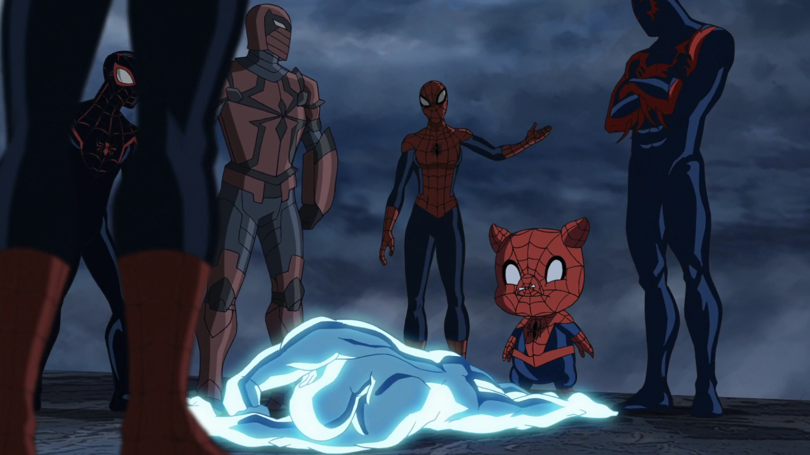
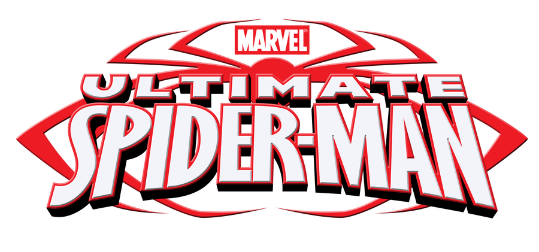
Peter Parker ya sabe balancearse entre los rascacielos de Nueva York, pero todavía le falta aprender lo más difícil: trabajar en equipo. Nick Fury lo recluta para S.H.I.E.L.D. y lo pone a entrenar junto a otros cuatro adolescentes con superpoderes. Cuatro temporadas, 104 episodios y un Spidey que rompe la cuarta pared para contarte todo en la cara.
Marvel Animation · Disney XD · 2012 – 2017
Estrenada el 1 de abril de 2012 en Disney XD, Ultimate Spider-Man reinventa al trepamuros como un pibe de secundaria que, además de las clases, tiene que bancarse a un jefe como Nick Fury y a cuatro compañeros de equipo tan verdes como él.
Spidey frena la acción, mira a cámara y te explica lo que está pensando. Además la serie corta a secuencias mentales dibujadas en estilo chibi cuando Peter se imagina cosas.
S.H.I.E.L.D. arma un cuartel secreto debajo de la casa de la tía May y convierte el instituto Midtown en tapadera. Entrenar y aprobar Historia al mismo tiempo no es fácil.
Iron Man, Hulk, Doctor Strange, Los Vengadores, Blade, Deadpool y hasta el Spider-Verso completo pasan por la serie. Cada temporada sube la apuesta.
Fury no le dio a Peter un compañero: le dio cuatro (y después se les unió Flash como el Agente Venom). Pasá el mouse por cada tarjeta para verlos en acción.
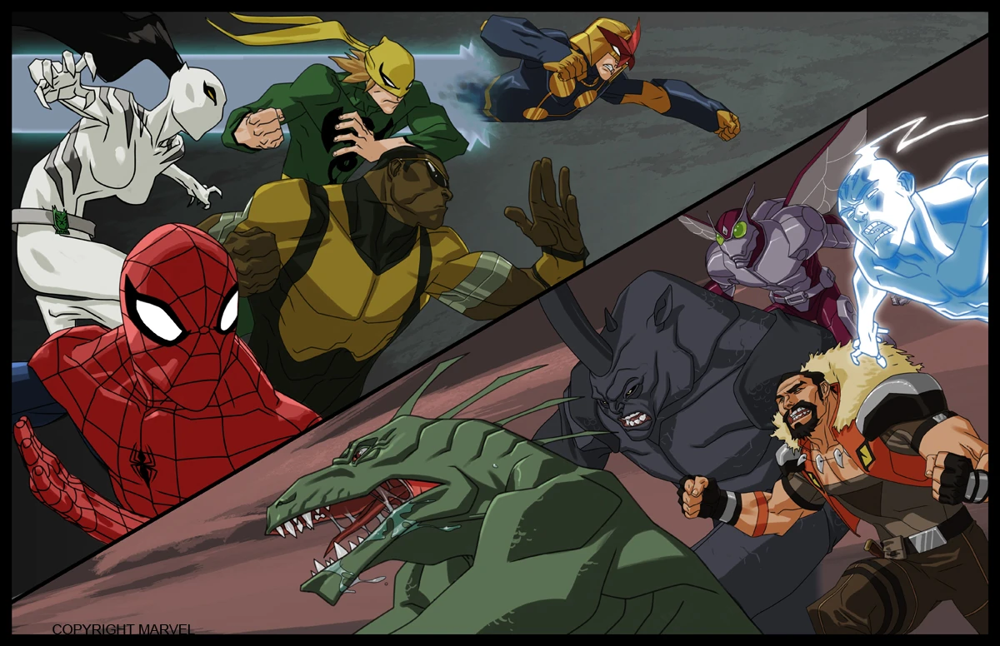
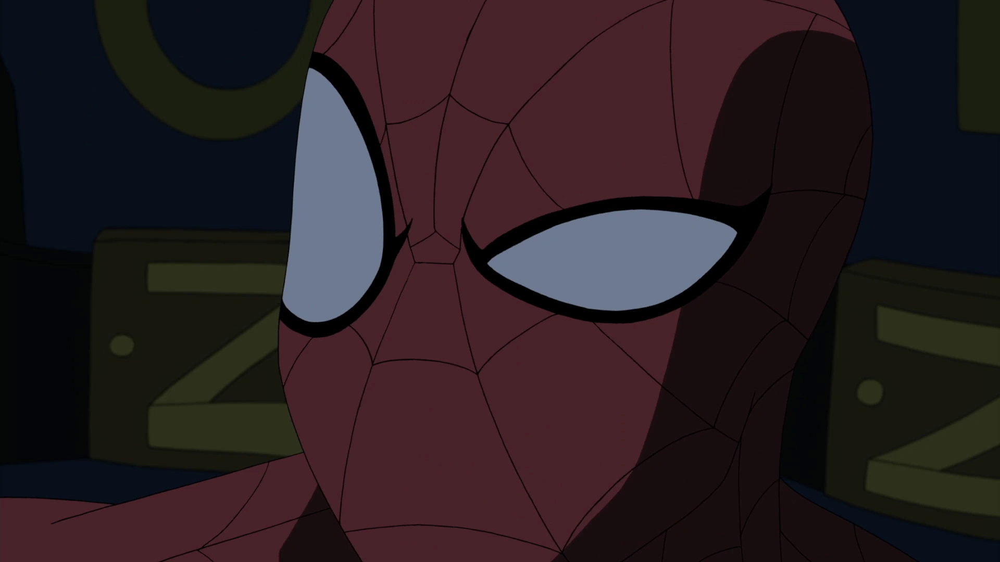
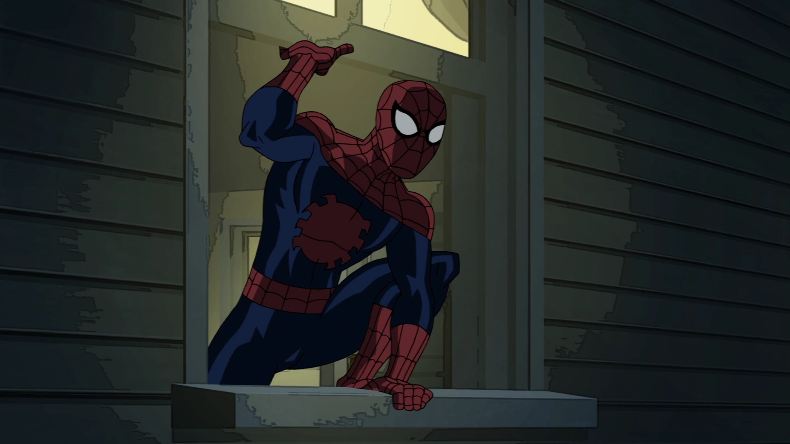
Peter Parker
El líder a la fuerza. Rápido de reflejos y más rápido de boca. Voz de Drake Bell.
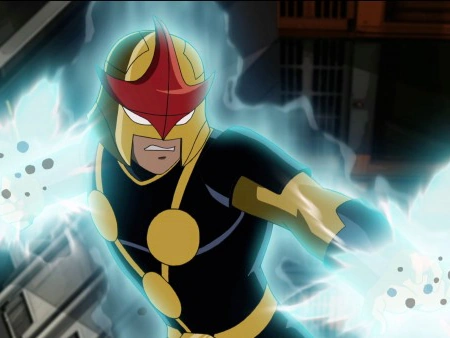
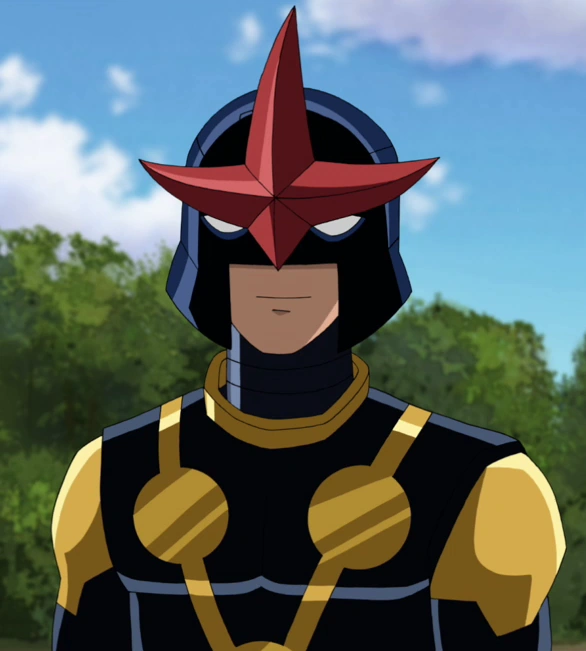
Sam Alexander
El casco del Cuerpo Nova y cero paciencia. El que más choca con Peter. Voz de Logan Miller.
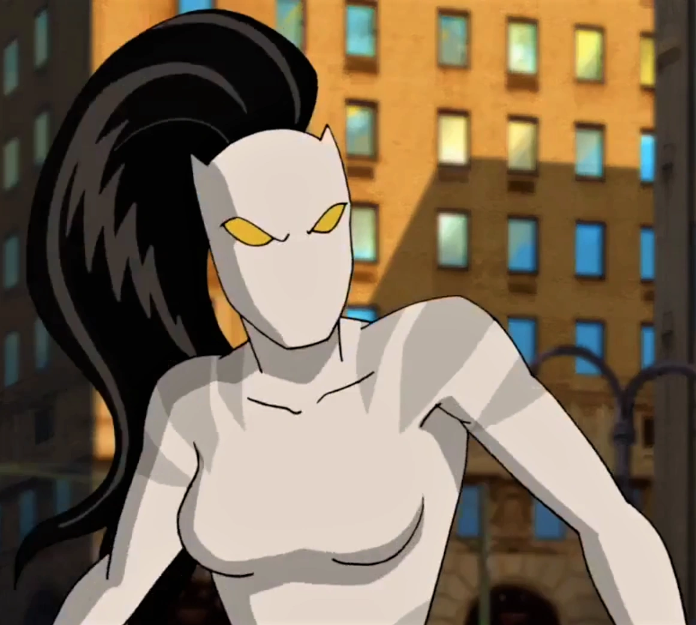
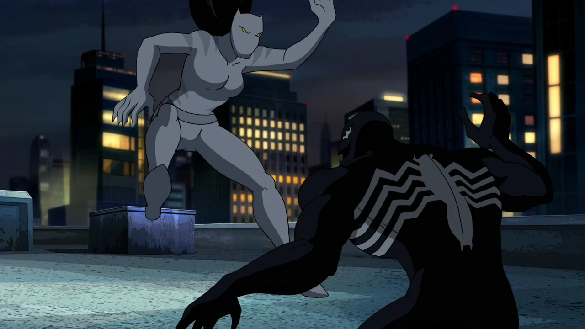
Ava Ayala
El amuleto del tigre le da fuerza y garras. La más disciplinada del grupo. Voz de Caitlyn Taylor Love.
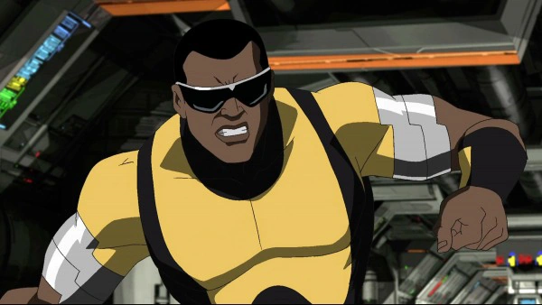
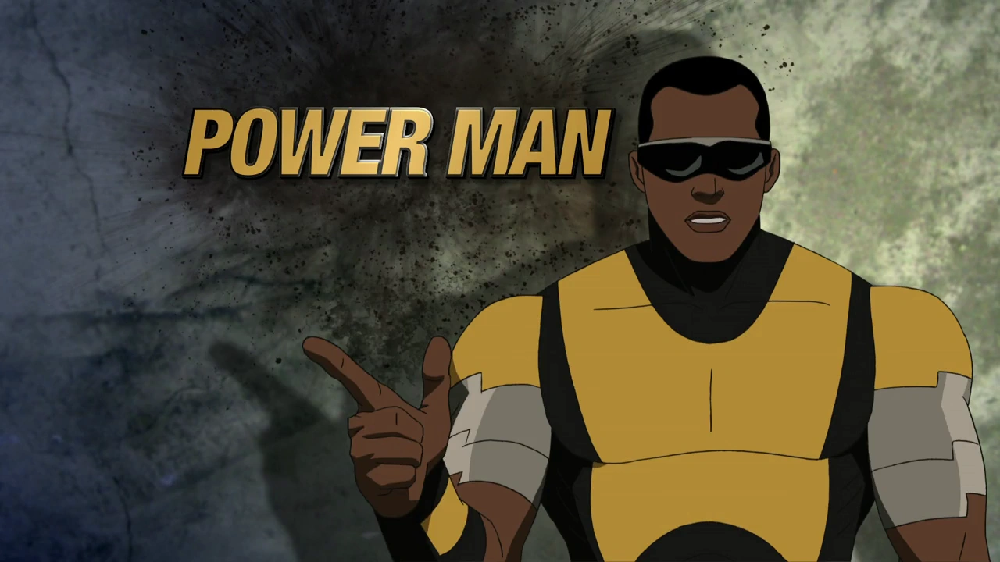
Luke Cage
Piel indestructible y fuerza sobrehumana. El paragolpes del equipo. Voz de Ogie Banks.
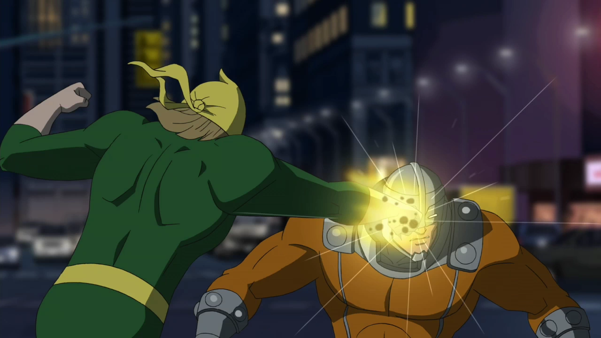
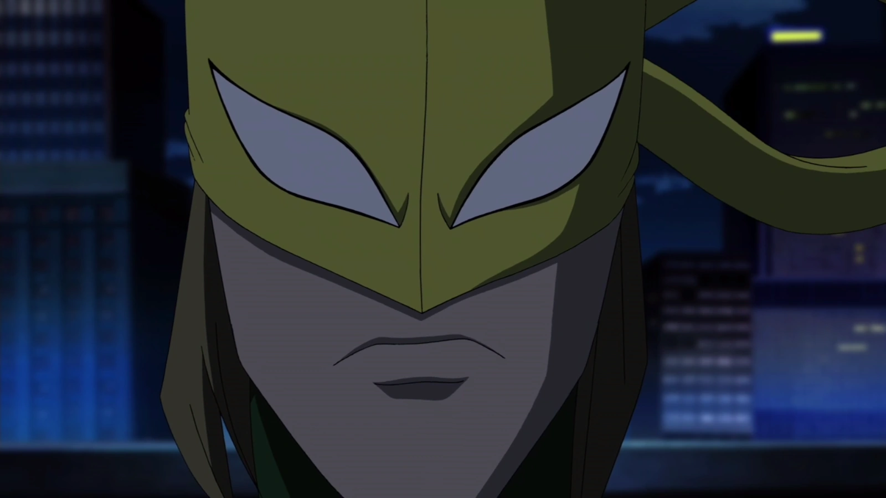
Danny Rand
Artes marciales de K'un-Lun y una frase zen para cada situación. Voz de Greg Cipes.
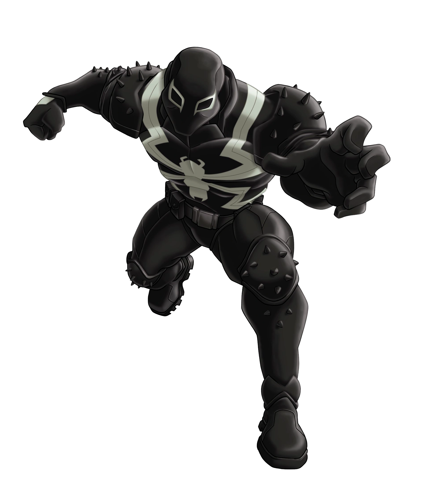
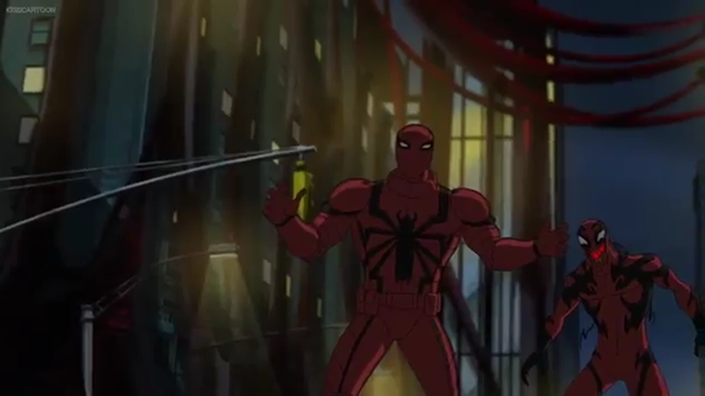
Flash Thompson
El bully del colegio termina domando al simbionte y sumándose al equipo en la temporada 3.
26 episodios cada una. De aprender a trabajar en equipo a enfrentar al Sexteto Siniestro definitivo.
 01
01
1 abr 2012 – 28 oct 2012 · 26 episodios
Peter acepta el entrenamiento de S.H.I.E.L.D. y conoce a su equipo. Entre clases y misiones aparecen el Duende Verde, los Cuatro Terribles y el primer contacto con el simbionte.
Ver los 26 capítulos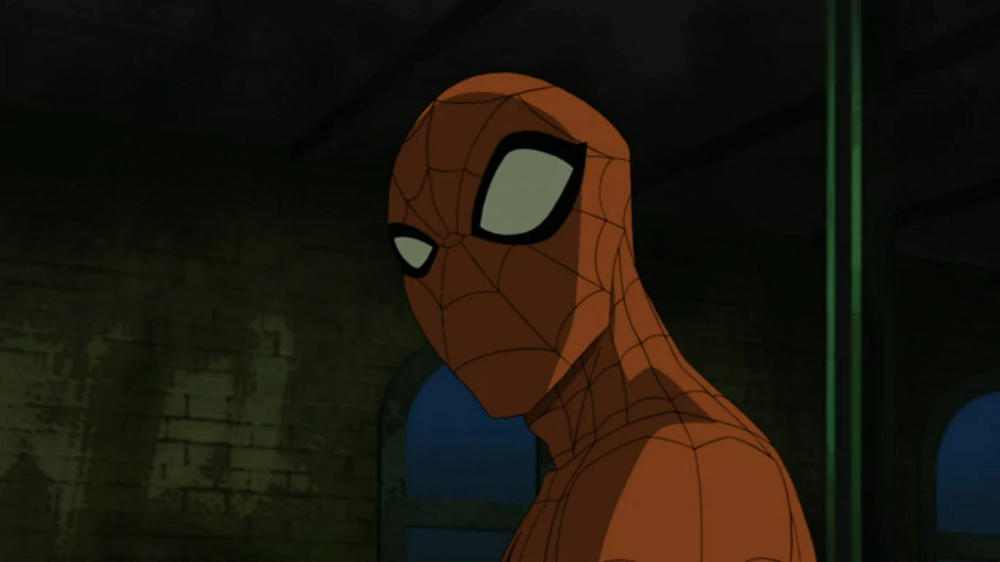
0221 ene 2013 – 21 nov 2013 · 26 episodios
El Doctor Octopus arma el Sexteto Siniestro y Carnage entra en escena. Peter empieza a ganarse el respeto del equipo mientras la doble vida se le hace cada vez más pesada.
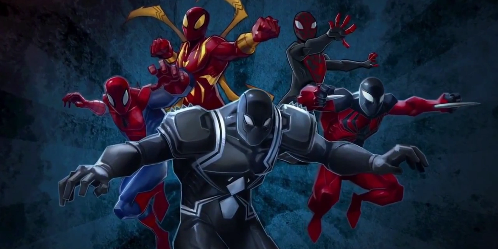
0313 mar 2014 – 24 oct 2015 · 26 episodios
Peter arma su propio equipo y la serie se manda con su versión del Spider-Verso: Spider-Man Noir, Spider-Girl, Spider-Ham y compañía cruzando universos.
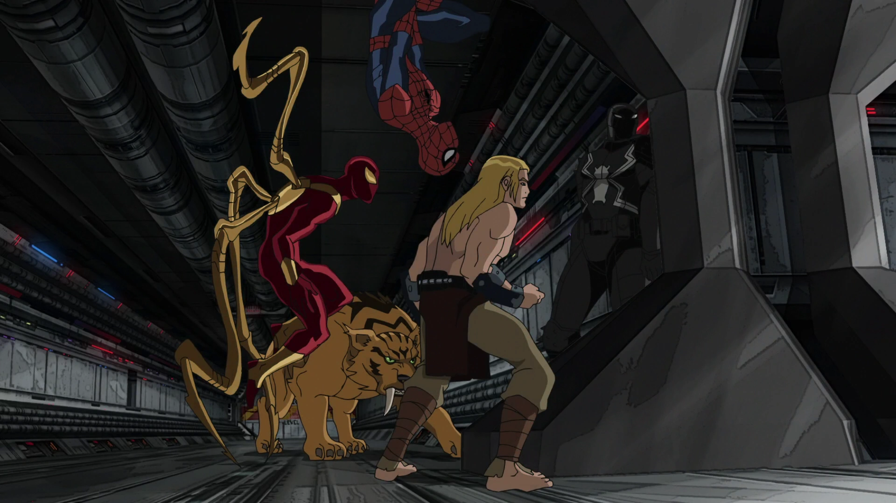
0421 feb 2016 – 7 ene 2017 · 26 episodios
Spider-Man se gradúa de la academia y pasa a ser instructor. Enfrente, Octopus arma el Sexteto Siniestro definitivo para el cierre de la serie.
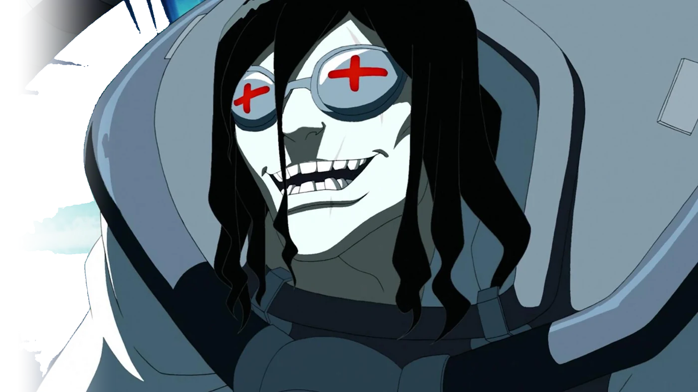
El Doctor Octopus es el villano que atraviesa las cuatro temporadas. Su obsesión tiene nombre y apellido, y para conseguirlo junta a lo peor de Nueva York.
El mismo actor que interpretó a J. Jonah Jameson en las películas de Sam Raimi le puso la voz al personaje en la serie animada.
Brian Michael Bendis, el guionista del cómic Ultimate Spider-Man, y Paul Dini (Batman: la serie animada) participaron del equipo creativo.
La temporada 3 adaptó el cruce entre universos arañas en 2014, cuatro años antes de que la idea llegara al cine.
El último episodio salió al aire el 7 de enero de 2017, cerrando 104 capítulos y casi cinco años de emisión en Disney XD.
Hasta acá la presentación. El resto del sitio sigue en estas tres páginas: las imágenes, los capítulos y el lugar para escribirnos.
Dieciséis imágenes de las cuatro temporadas, agrupadas por tema y con visor a pantalla completa.
Ver la galeríaLos 26 episodios uno por uno, con imagen, resumen, personajes y un dato de cada capítulo.
Ver los capítulos¿Un dato mal, una imagen para sumar o ganas de discutir cuál es la mejor temporada? Escribinos.
Escribinos